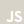
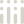

Piyush
Kasle
Software Development Engineer
01 / About
The work around the model that keeps it running.
I'm a software engineer with a Master's in Software Engineering from Florida Tech and a year of backend experience at Acaira Technologies. I build APIs, databases and the infrastructure that keeps ML models running, and I care about tests, observability and clear tradeoffs.
Available to start immediately.
02 / Stack
From the API down to the server it runs on.
Languages
- Python
- Java

JavaScript- SQL
Backend & web
- FastAPI
- Flask
- Express.js
- Node.js
- React
Databases & caching
- PostgreSQL
- MySQL
- Redis
ML & computer vision
- PyTorch
- Hugging Face
- scikit-learn
- LightGBM
- pandas
- OpenCV
- YOLOv8
Cloud & DevOps
- AWS EC2
- AWS S3
- Docker
- GitHub Actions
- Linux
APIs & integrations
- Google Meet API
- Mailgun
- Razorpay
- JWT
Testing & tools
- pytest
- Postman
- Git
- Streamlit

Plotly
Embedded
- C/C++
- Arduino
- STM32
03 / Projects
Built end to end, tradeoffs written down.
04 / Experience
From Mumbai to Melbourne, Florida.
-
B.E., Electronics and Computer Science
University of Mumbai · Fr. Conceicao Rodrigues College of EngineeringWhere I spent two seasons on Team Robocon CRCE and built the smart parking system as my final year project.
-
Software Developer
Acaira Technologies · Mumbai startupBackend for a school app serving about 1,100 students that had run on paper registers, WhatsApp groups and Excel. Express.js, MySQL, React and Redis.
- Built the fee module backend, then proposed and built automatic receipts: PDFs in the school's format with gapless numbering, emailed from an idempotent queue, 4,300+ receipts and notices a year.
- Added cheque tracking so a receipt only issues after a cheque clears: about 15 bounced cheques caught with zero receipts sent for them, and cheque handling cut by about 40%.
- Took attendance straight from Google Meet, marking a student present at 75% of class time, which ended roll call and gave teachers back 5+ hours a week.
- Cut the 12 KPI analytics dashboard from 3.2 s to 180 ms median with query rewrites, a covering index and Redis caching.
-
MS, Software Engineering
Florida Institute of TechnologyGraduated May 2026. Capstone: the MLOps pipeline above, built for the university health center. Coursework included Advanced Software Engineering, Advanced Software Testing, Software Architecture and Design, and Advanced Database Systems.
-
Teaching Assistant, Database Systems
Florida Institute of TechnologyA graduate course of about 28 students. Graded assignments and exams with written feedback aimed at the specific mistake, helped refine how the rubrics scored partial credit and common errors, and held weekly office hours.